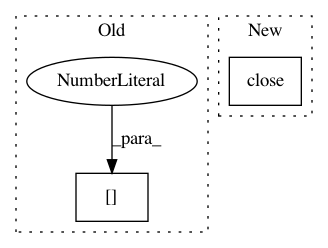

21f9151d745c57671661baff3272d544a56f7bbe,trainval_net.py,,,#,148
Before Change
loss_rpn_cls = rpn_loss_cls.data[0]
loss_rpn_box = rpn_loss_box.data[0]
loss_rcnn_cls = RCNN_loss_cls.data[0]
loss_rcnn_box = RCNN_loss_bbox.data[0]
fg_cnt = torch.sum(rois_label.data.ne(0))
bg_cnt = rois_label.data.numel() - fg_cnt
print("[session %d][epoch %2d][iter %4d/%4d] loss: %.4f, lr: %.2e" \
After Change
print(end - start)
if args.use_tfboard:
logger.close()
In pattern: SUPERPATTERN
Frequency: 3
Non-data size: 2
Instances
Project Name: jwyang/faster-rcnn.pytorch
Commit Name: 21f9151d745c57671661baff3272d544a56f7bbe
Time: 2018-08-27
Author: jw2.yang@gmail.com
File Name: trainval_net.py
Class Name:
Method Name:
Project Name: dit/dit
Commit Name: 4dfa3d7ef2f5cf36fb256c6021d4d5062bdef42e
Time: 2016-06-02
Author: ryangregoryjames@gmail.com
File Name: dit/multivariate/base_markov_optimizer.py
Class Name: MarkovVarOptimizer
Method Name: _polish
Project Name: nilearn/nilearn
Commit Name: 04a859c350a68f99e7a7c78974ceb129065f9a20
Time: 2018-01-03
Author: moritz.boos@uni-oldenburg.de
File Name: nilearn/plotting/tests/test_matrix_plotting.py
Class Name:
Method Name: test_matrix_plotting